The client
Ines Marlowe wants her brother found. The first face-to-face scene teaches the command list. "Tobias, dock auditor" drops onto the screen edge as the first clue card.
Systems: face-to-face, Ask about, clue capture, first lead.
First pass of concept art and a storyboard for the vertical slice. Fourteen frames. The questions that need an answer are at the bottom.

Key art. The low town at the waterline, the Spire behind it. Everything in the game happens between those two.
One path through the case. Beats 2 to 6 can be played in any order and split between co-op partners. Each beat lists the system it exercises.
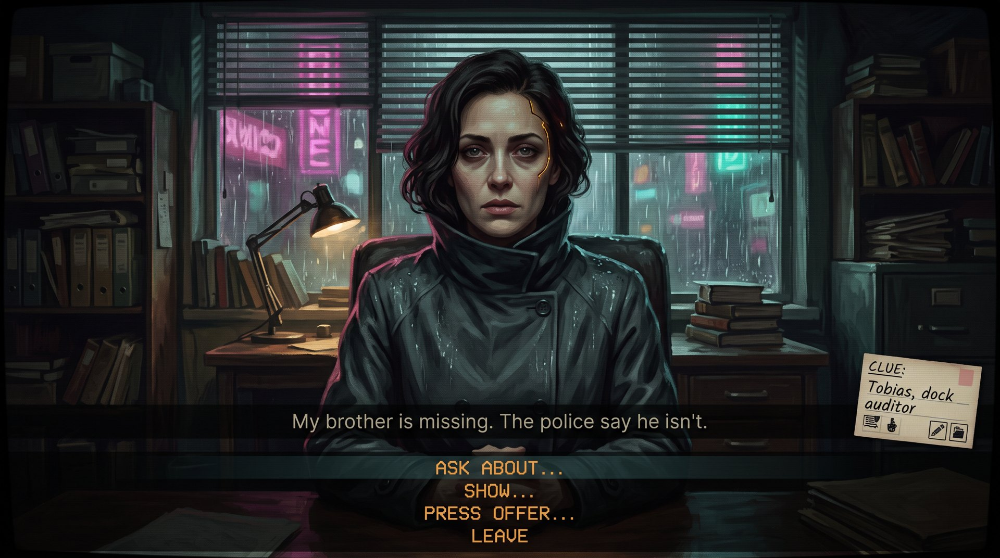
Ines Marlowe wants her brother found. The first face-to-face scene teaches the command list. "Tobias, dock auditor" drops onto the screen edge as the first clue card.
Systems: face-to-face, Ask about, clue capture, first lead.
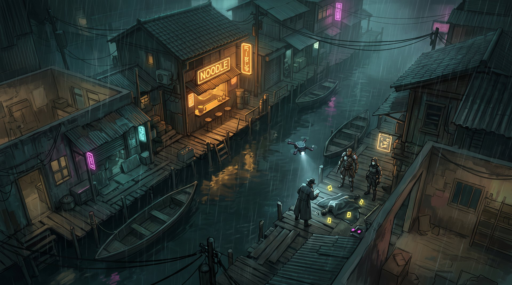
The body is on the walkway before the rain washes the scene. Focus mode outlines what can be examined: the coat lining with the bathhouse wristband, the empty eye socket, a gang tag on the wall that uses last year's mark.
Systems: isometric exploration, Focus mode, item facets, evidence decay timer.
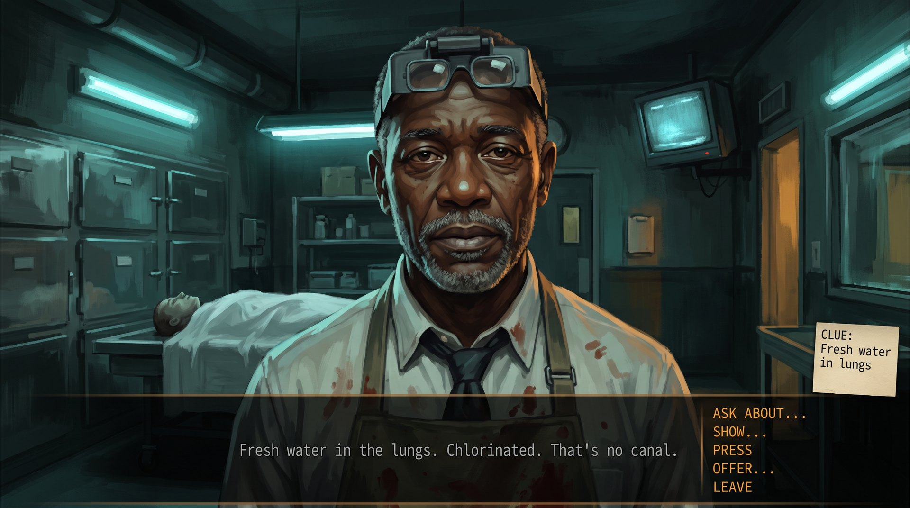
Okonkwo gives the two facts that break the planted story: chlorinated water in the lungs, and a surgical cut around the eye. In co-op one player can be here while the other is still at the canal.
Systems: Observed clues, leads raised, splitting up.
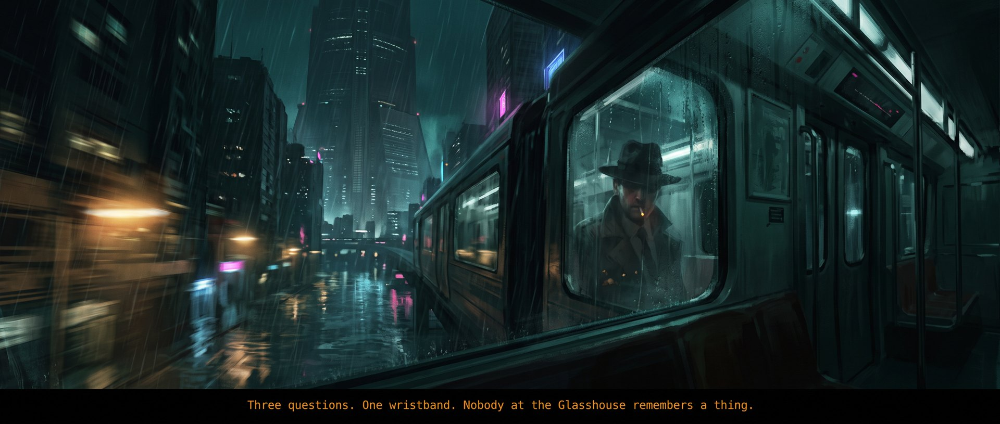
The voice-over is the recap screen. It reads back the open leads in character, so a player returning after a break knows where they stand.
Systems: travel, time block advances, lead summary.
Show the wristband and the attendant's story changes. The back-office terminal holds a drain log with an emergency flush at 02:05. Talk, hack, or break in: three routes to the same insight.
Systems: Show, Leverage, hacking, three-route rule.
The first Press. Sable claims never to have seen Tobias; the cauterised cut and a cash invoice say otherwise. Grit frightens them, Read corners them, and the two leave different relationships behind.
Systems: Contradiction, Press, Claimed clue converted.
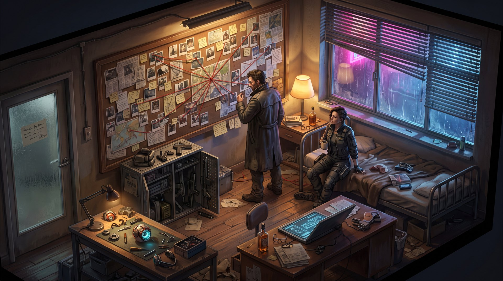
The case board is a real wall in the room you sleep in. Players gather here to link clues and argue about the answers. The workbench holds the item you are examining; the locker holds your loadout.
Systems: case board, insights, co-op lobby, home base.
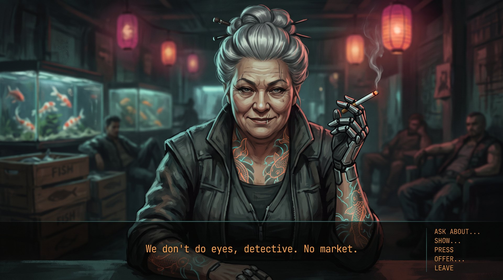
If the theory clears the Dogs, you come to talk and this scene plays. If it blames them, you never see this screen: you come through the door shooting.
Systems: committing a theory, majority vote in co-op, branch.
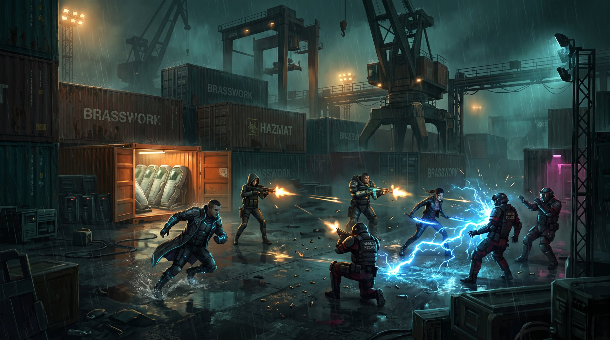
Harbor Police hit the den mid-conversation. The fight is the same size on either branch; what changes is which side you are on. This frame is the target for how four-player combat should read: one dodge, one stagger, one implant ability, clear silhouettes.
Systems: combat, stagger and subdue, encounter scaling.
Ines again, same chair. You lay your answers on the desk one at a time and she reacts to each. If you recovered the eye, its last clear frame is her face. Case 2 starts there.
Systems: revelation scene, consequences, hook.
The same canal scene in two styles. Painterly is richer and moodier. Graphic is cheaper to build in 3D, runs well in a browser, and keeps small characters readable when four players and a dozen enemies are on screen.
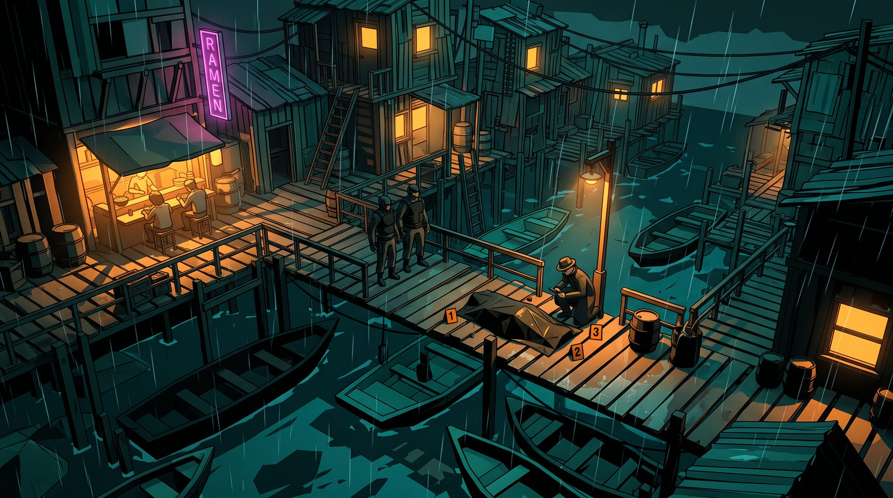
These four came back as cinematic paintings, not at the gameplay camera angle. Treat them as mood and palette references. Only the Shallows and the office frames show the real isometric view.
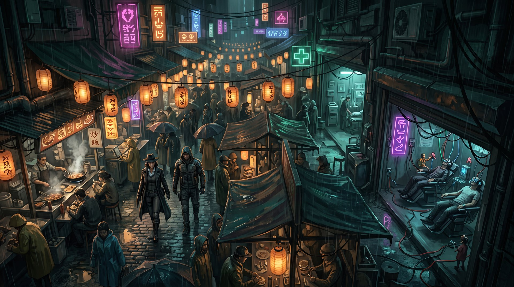
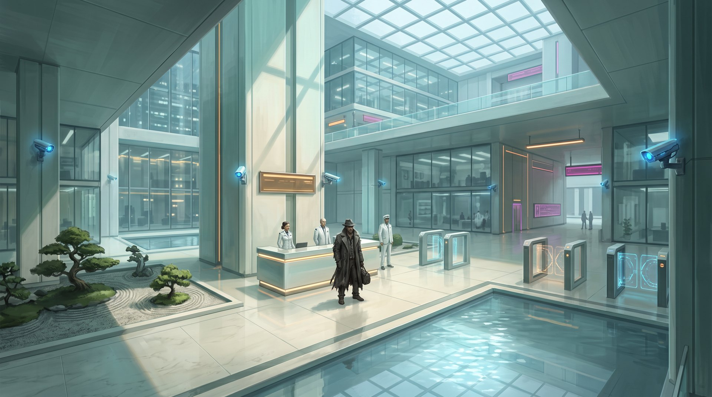
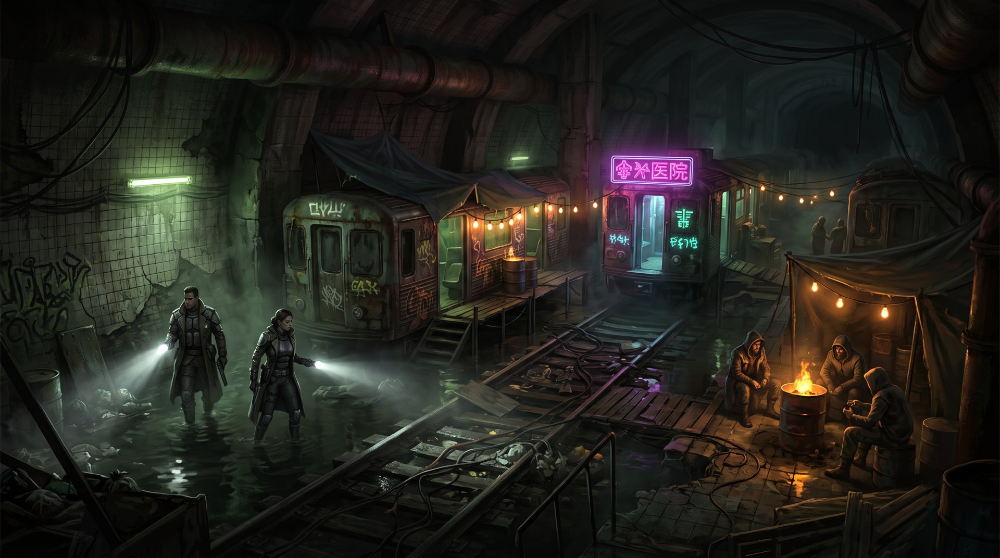
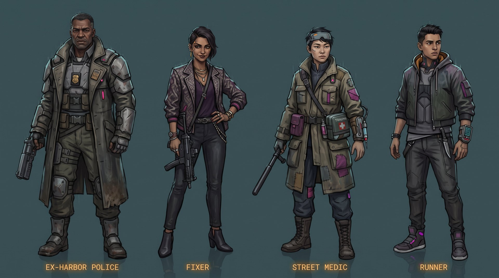
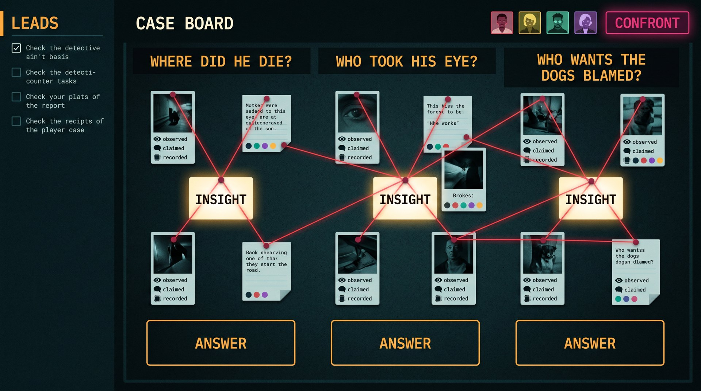
Across the three face-to-face screens the command list landed in different places: centred under the subtitle for Ines (where "Press" and "Offer" also ran together), bottom right for Mama Carp and Okonkwo. Bottom right with the clue card above it, as in the Okonkwo frame, is the layout to keep. Okonkwo's face should also be redrawn so he is unmistakably our own character.
My recommendation is B, graphic noir, for the game itself, keeping the painterly style for face-to-face portraits and travel interludes. That is also how Dune split it: simple world view, rich conversation screens.
Commands bottom right, clue cards sliding in above them, subtitle bottom left. Say if you want the list centred instead.
Do Ines and Mama Carp look right? These would become the reference portraits every later frame is matched to.
The three missing storyboard frames (Glasshouse, Sable's clinic, the afterimage), the four districts redone at the gameplay camera angle in the chosen style, and portraits for Lt. Dace, Dr. Sable, Wen, and Juno Vale.